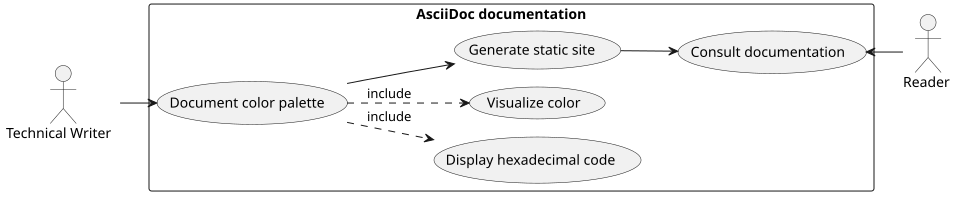
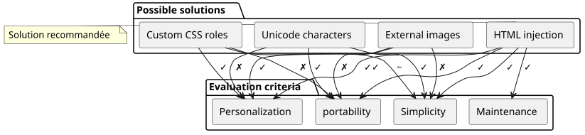
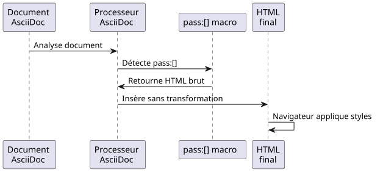
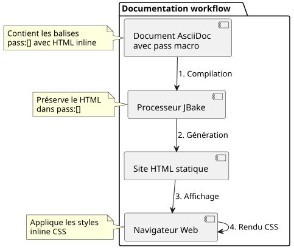

Displaying Colored Squares in AsciiDoc: A Practical Guide
Published on 01 November 2025
Introduction
When writing technical documentation, especially for style guides or user interface specifications, it is common to need to display color palettes. AsciiDoc, while very powerful for documentation, does not offer native syntax for displaying color samples. This article explores the problem and proposes an elegant solution based on HTML injection.
The Problem
Usage Context
Imagine you are documenting the CSS variables of a web application theme. You need to:
-
List the hexadecimal color codes
-
Display a visual preview of each color
-
Maintain the readability of the source document
-
Ensure compatibility with static site generators like JBake

Possible Approaches
Several solutions can be considered for displaying colors in an AsciiDoc document:

Option 1: Unicode Characters
Using Unicode characters like`■`(■) is simple but limited:
* ■ --accent-color: #7952b3 (violet Bootstrap)Limitations: No control over color, depends on the system font.
Option 2: External Images
Creating PNG or SVG images for each color:
* image:colors/violet.svg[width=16] --accent-color: #7952b3Limitations: Heavy maintenance, proliferation of files, no automatic synchronization.
Option 3: Custom CSS Roles
Defining CSS classes and applying them via AsciiDoc roles:
* [.color-violet]##■## --accent-color: #7952b3Limitations: Requires an external stylesheet, prior definition of all possible colors.
Option 4: HTML Injection (chosen solution)
Using the macro``to inject HTML with inline styles:
* pass:[<span style="display:inline-block;width:1em;height:1em;
background:#7952b3;vertical-align:middle;margin-right:0.5em"></span>]
--accent-color: #7952b3 (violet Bootstrap)The Solution: HTML Injection with
Working Principle
The macro``in AsciiDoc allows the insertion of raw content that will not be interpreted by the AsciiDoc processor. This allows us to directly inject HTML with inline CSS styles.

Implementation
Here is the HTML structure to inject:
<span style="display:inline-block;
width:1em;
height:1em;
background:#7952b3;
vertical-align:middle;
margin-right:0.5em">
</span>Explanation of CSS Properties
| Property | Function |
|---|---|
|
Allows defining width/height while remaining in the inline flow |
|
Square size relative to font size (responsive) |
|
The color to display (variable according to your needs) |
|
Aligns the square with the adjacent text |
|
Spacing between the square and the text |
Complete Example
Here is an example documenting a theme palette:
== Thème Clair
* pass:[<span style="display:inline-block;width:1em;height:1em;background:#f8f9fa;border:1px solid #ccc;vertical-align:middle;margin-right:0.5em"></span>] --bg-primary: `#f8f9fa` (blanc cassé)
* pass:[<span style="display:inline-block;width:1em;height:1em;background:#212529;vertical-align:middle;margin-right:0.5em"></span>] --text-primary: `#212529` (noir très foncé)
* pass:[<span style="display:inline-block;width:1em;height:1em;background:#7952b3;vertical-align:middle;margin-right:0.5em"></span>] --accent-color: `#7952b3` (violet Bootstrap)
* pass:[<span style="display:inline-block;width:1em;height:1em;background:#61428f;vertical-align:middle;margin-right:0.5em"></span>] --accent-hover: `#61428f` (violet plus foncé)
* pass:[<span style="display:inline-block;width:1em;height:1em;background:#ffffff;border:1px solid #ccc;vertical-align:middle;margin-right:0.5em"></span>] --card-bg: `#ffffff` (blanc)Which produces the following rendering:
Light Theme
-
--bg-primary:`#f8f9fa`(off-white)
-
--text-primary:`#212529`(very dark black)
-
--accent-color:`#7952b3`(Bootstrap purple)
-
--accent-hover:`#61428f`(darker purple)
-
--card-bg:`#ffffff`(white)
Optimizations and Best Practices
Handling Light Colors
For very light colors (white, very light gray), add a border to make them visible on a white background:
<span style="display:inline-block;width:1em;height:1em;
background:#ffffff;border:1px solid #ccc;
vertical-align:middle;margin-right:0.5em"></span>The gray border (border:1px solid #ccc) allows the white square to be delineated on a white background.
Adapting Square Size
You can adjust the size of the squares according to your needs:
* pass:[<span style="display:inline-block;width:1.5em;height:1.5em;background:#7952b3;vertical-align:middle;margin-right:0.5em"></span>] Grand carré
* pass:[<span style="display:inline-block;width:0.8em;height:0.8em;background:#7952b3;vertical-align:middle;margin-right:0.5em"></span>] Petit carréUsing the em unit`em`ensures that the squares adapt to the font size.
Creating Variants
For specific needs, you can create different shapes:
Colored circle
* pass:[<span style="display:inline-block;width:1em;height:1em;background:#7952b3;border-radius:50%;vertical-align:middle;margin-right:0.5em"></span>] Cercle violetSquare with colored border
* pass:[<span style="display:inline-block;width:1em;height:1em;background:#ffffff;border:3px solid #7952b3;vertical-align:middle;margin-right:0.5em"></span>] Bordure violetteSolution Architecture

Advantages and Limitations
Advantages
-
✓ Autonomy: No dependency on external files
-
✓ Portability: Works with all AsciiDoc processors
-
✓ Synchronization: The color code is directly in the HTML
-
✓ Flexibility: Complete style customization
-
✓ Maintenance: Simple modification of the hexadecimal code
-
✓ JBake Compatibility: Works perfectly with static site generators
Limitations
-
✗ Verbosity: Repetitive HTML code in the AsciiDoc source
-
✗ Source Readability: The source document is less clean
-
✗ Accessibility: No native alternative text (must be added manually)
Improving Accessibility
To make the squares accessible to screen readers:
* pass:[<span role="img" aria-label="Couleur violet Bootstrap"
style="display:inline-block;width:1em;height:1em;background:#7952b3;
vertical-align:middle;margin-right:0.5em"></span>]
--accent-color: `#7952b3` (violet Bootstrap)The role and aria-label attributes`role="img"` et `aria-label`allow assistive technologies to understand and describe the visual content.
Concrete Example: Theme Documentation
Here is a complete example documenting several themes:
= Guide des couleurs de l'application
== Thème Clair (`:root`)
* pass:[<span style="display:inline-block;width:1em;height:1em;background:#f8f9fa;border:1px solid #ccc;vertical-align:middle;margin-right:0.5em"></span>] --bg-primary: `#f8f9fa` (blanc cassé)
* pass:[<span style="display:inline-block;width:1em;height:1em;background:#212529;vertical-align:middle;margin-right:0.5em"></span>] --text-primary: `#212529` (noir très foncé)
* pass:[<span style="display:inline-block;width:1em;height:1em;background:#7952b3;vertical-align:middle;margin-right:0.5em"></span>] --accent-color: `#7952b3` (violet Bootstrap)
== Thème Sombre (`[data-bs-theme="dark"]`)
* pass:[<span style="display:inline-block;width:1em;height:1em;background:#212529;vertical-align:middle;margin-right:0.5em"></span>] --bg-primary: `#212529` (noir très foncé)
* pass:[<span style="display:inline-block;width:1em;height:1em;background:#ffffff;border:1px solid #999;vertical-align:middle;margin-right:0.5em"></span>] --text-primary: `#ffffff` (blanc)
* pass:[<span style="display:inline-block;width:1em;height:1em;background:#0d6efd;vertical-align:middle;margin-right:0.5em"></span>] --accent-color: `#0d6efd` (bleu Bootstrap)
== Thème Contraste Élevé (`[data-bs-theme="high-contrast"]`)
* pass:[<span style="display:inline-block;width:1em;height:1em;background:#000000;vertical-align:middle;margin-right:0.5em"></span>] --bg-primary: `#000000` (noir)
* pass:[<span style="display:inline-block;width:1em;height:1em;background:#ffffff;border:1px solid #000;vertical-align:middle;margin-right:0.5em"></span>] --text-primary: `#ffffff` (blanc)
* pass:[<span style="display:inline-block;width:1em;height:1em;background:#00ff00;vertical-align:middle;margin-right:0.5em"></span>] --accent-color: `#00ff00` (vert vif)Conclusion
HTML injection via the macro``in AsciiDoc offers an elegant and pragmatic solution for displaying color samples in technical documentation. Although slightly verbose, this approach guarantees maximum portability and simplified maintenance.
This technique requires no external configuration, no additional stylesheets, and works immediately with JBake and all standard AsciiDoc processors.
Once you have created your first colored square, simply copy and paste the HTML code and modify the hexadecimal code to quickly create a complete palette.
This technique can be extended to other use cases requiring custom visual rendering: icons, badges, simple graphics, or any visual element requiring precise style control.
Resources
Article published on 2025-11-01